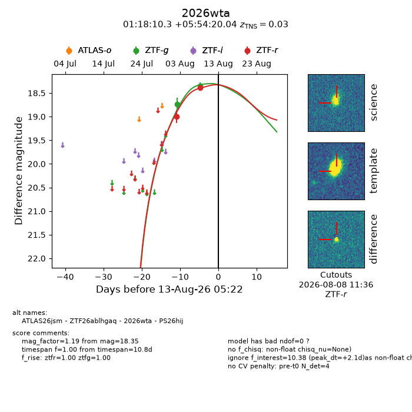
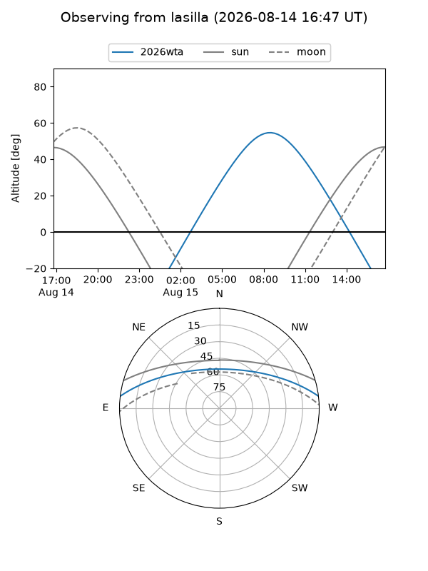
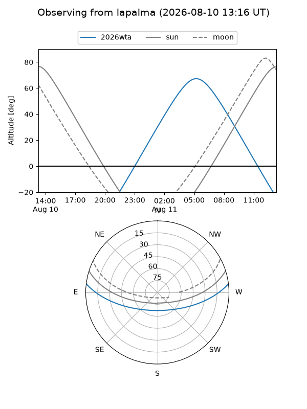
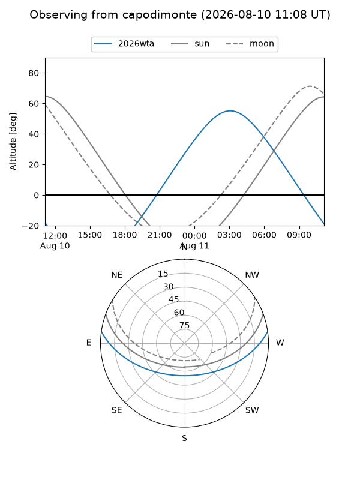
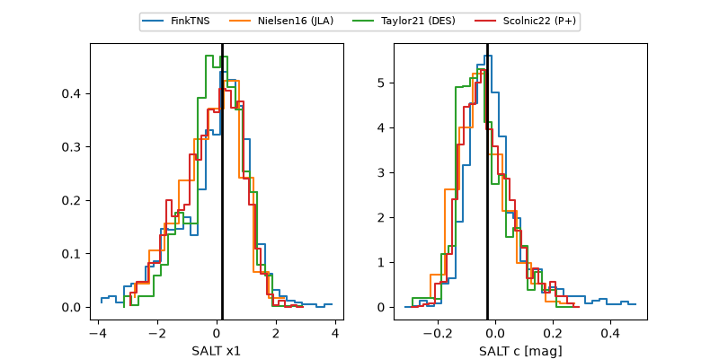

2026wta
Target 2026wta at 2026-08-13 05:25
Aliases and brokers:
FINK-ZTF: ztf.fink-portal.org/ZTF26ablhgaq
Lasair-ZTF: lasair-ztf.lsst.ac.uk/objects/ZTF26ablhgaq
ALeRCE-ZTF: alerce.online/object/ZTF26ablhgaq
YSE-PZ: ziggy.ucolick.org/yse/transient_detail/2026wta
TNS name: wis-tns.org/object/2026wta
Direct TNS query: direct search
alt names
ZTF26ablhgaq (ztf,fink_ztf)
2026wta (tns,yse)
ATLAS26jsm (atlas)
PS26hij (panstarrs)
Coordinates:
equatorial (ra, dec) = 19.5429,+5.90557
equatorial (HMS+DMS) = 01:18:10.29,+05:54:20.04
galactic (l, b) = (134.9874,-56.33915)
Flags:
TNS type: SN II
TNS redshift: 0.0300
peak dt: +2.1
Photometry:
last ztfg=18.35, ztfr=18.38
2 ztfg, 2 ztfr detections
Lightcurve

Visibility



Additional plots
